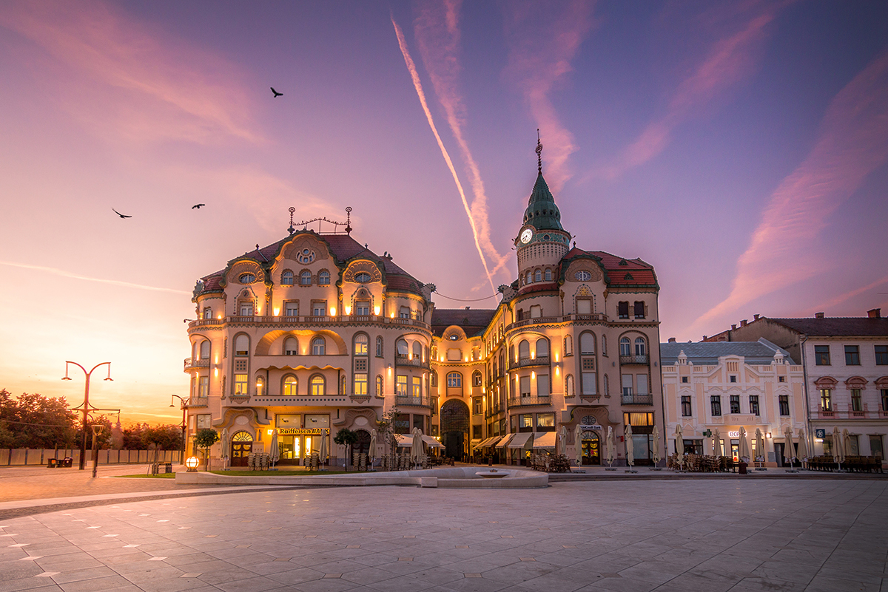
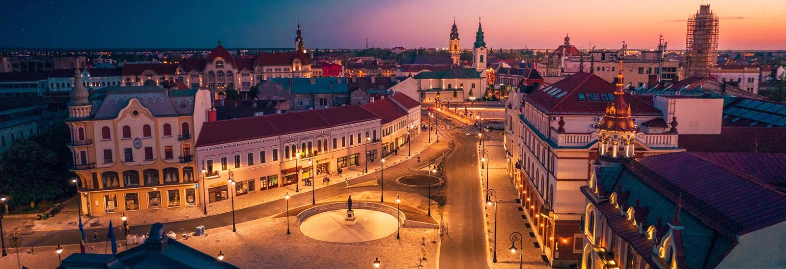
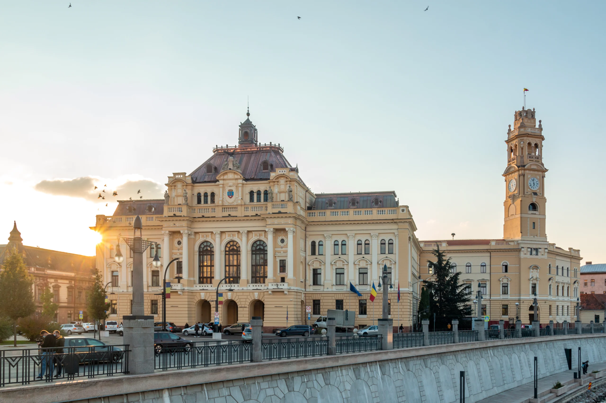

Atracții Principale
Oradea este un oraș plin de istorie și cultură, oferind numeroase atracții turistice pentru vizitatori. Printre cele mai populare se numără:
- Palatul Vulturul Negru
- Biserica cu Lună
- Muzeul Țării Crișurilor
- Citadela Oradea
- Aquapark Nymphaea
Imagini din Oradea
Oradea este un oraș vizual impresionant, cu numeroase clădiri istorice și peisaje frumoase.
  